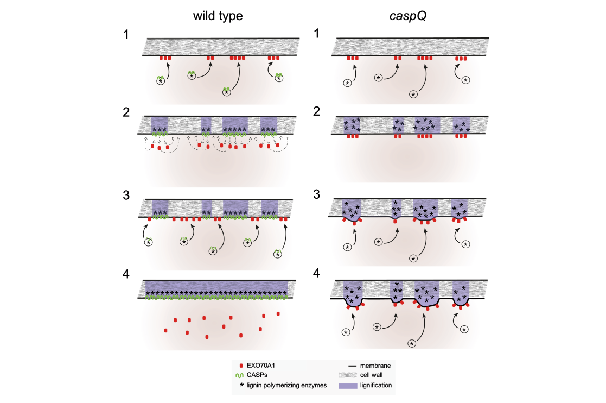

CASP-like protein 1D1 (AtCASPL1D1, At4g15610) is a small tetraspan (four-transmembrane) plasma-membrane protein of the CASP-like (CASPL) subfamily of the MARVEL-related Casparian strip membrane domain protein family (CASPL1 clade). Together with CASPL1D2 it has a slight, redundant negative role in root endodermal suberization (caspl1d1 caspl1d2 double mutants show a weak enlargement of the continuous suberization zone), and it is one of four CASPLs (with CASPL1B1, CASPL1B2, CASPL1D2) that interact with the aquaporin PIP2;1. Its experimentally determined location is the plasma membrane; high-throughput proteomics also detect it in Golgi, trans-Golgi network and endosomes, consistent with secretory trafficking. No specific molecular function has been characterized; it is inferred to act as a membrane scaffold rather than an enzyme or transporter.
| GO Term | Evidence | Action | Reason |
|---|---|---|---|
|
GO:0005886
plasma membrane
|
IEA
GO_REF:0000120 |
ACCEPT |
Summary: Correct, well-supported plasma-membrane localization for this multi-pass CASP-like protein.
Reason: UniProt annotates a multi-pass cell-membrane protein and the localization is independently confirmed experimentally (IDA, PMID:24920445).
Supporting Evidence:
file:ARATH/CASPL1D1/CASPL1D1-uniprot.txt
SUBCELLULAR LOCATION: Cell membrane
|
|
GO:0003674
molecular_function
|
ND
GO_REF:0000015 |
ACCEPT |
Summary: Root-level placeholder reflecting that no specific molecular function has been characterized.
Reason: No catalytic or transport activity is known for this CASP-like scaffold protein; the ND root annotation accurately reflects the absence of molecular-function data.
Supporting Evidence:
file:ARATH/CASPL1D1/CASPL1D1-goa.tsv
molecular_function
|
|
GO:0005794
Golgi apparatus
|
HDA
PMID:22430844 Isolation and proteomic characterization of the Arabidopsis ... |
KEEP AS NON CORE |
Summary: High-throughput proteomic localization to the Golgi apparatus; retained as non-core, secondary to the established plasma-membrane localization.
Reason: The established subcellular location of this CASPL is the plasma membrane (IDA, PMID:24920445); detection in the Golgi apparatus by high-throughput organellar proteomics most plausibly reflects the secretory trafficking route of a plasma-membrane protein rather than a distinct functional compartment.
Supporting Evidence:
file:ARATH/CASPL1D1/CASPL1D1-goa.tsv
Golgi apparatus
file:ARATH/CASPL1D1/CASPL1D1-uniprot.txt
SUBCELLULAR LOCATION: Cell membrane
|
|
GO:0005794
Golgi apparatus
|
HDA
PMID:25122472 Label-free protein quantification for plant Golgi protein lo... |
KEEP AS NON CORE |
Summary: High-throughput proteomic localization to the Golgi apparatus; retained as non-core, secondary to the established plasma-membrane localization.
Reason: The established subcellular location of this CASPL is the plasma membrane (IDA, PMID:24920445); detection in the Golgi apparatus by high-throughput organellar proteomics most plausibly reflects the secretory trafficking route of a plasma-membrane protein rather than a distinct functional compartment.
Supporting Evidence:
file:ARATH/CASPL1D1/CASPL1D1-goa.tsv
Golgi apparatus
file:ARATH/CASPL1D1/CASPL1D1-uniprot.txt
SUBCELLULAR LOCATION: Cell membrane
|
|
GO:0005768
endosome
|
HDA
PMID:22923678 Putative glycosyltransferases and other plant Golgi apparatu... |
KEEP AS NON CORE |
Summary: High-throughput proteomic localization to the endosome; retained as non-core, secondary to the established plasma-membrane localization.
Reason: The established subcellular location of this CASPL is the plasma membrane (IDA, PMID:24920445); detection in the endosome by high-throughput organellar proteomics most plausibly reflects the secretory trafficking route of a plasma-membrane protein rather than a distinct functional compartment.
Supporting Evidence:
file:ARATH/CASPL1D1/CASPL1D1-goa.tsv
endosome
file:ARATH/CASPL1D1/CASPL1D1-uniprot.txt
SUBCELLULAR LOCATION: Cell membrane
|
|
GO:0005794
Golgi apparatus
|
HDA
PMID:22923678 Putative glycosyltransferases and other plant Golgi apparatu... |
KEEP AS NON CORE |
Summary: High-throughput proteomic localization to the Golgi apparatus; retained as non-core, secondary to the established plasma-membrane localization.
Reason: The established subcellular location of this CASPL is the plasma membrane (IDA, PMID:24920445); detection in the Golgi apparatus by high-throughput organellar proteomics most plausibly reflects the secretory trafficking route of a plasma-membrane protein rather than a distinct functional compartment.
Supporting Evidence:
file:ARATH/CASPL1D1/CASPL1D1-goa.tsv
Golgi apparatus
file:ARATH/CASPL1D1/CASPL1D1-uniprot.txt
SUBCELLULAR LOCATION: Cell membrane
|
|
GO:0005802
trans-Golgi network
|
HDA
PMID:22923678 Putative glycosyltransferases and other plant Golgi apparatu... |
KEEP AS NON CORE |
Summary: High-throughput proteomic localization to the trans-Golgi network; retained as non-core, secondary to the established plasma-membrane localization.
Reason: The established subcellular location of this CASPL is the plasma membrane (IDA, PMID:24920445); detection in the trans-Golgi network by high-throughput organellar proteomics most plausibly reflects the secretory trafficking route of a plasma-membrane protein rather than a distinct functional compartment.
Supporting Evidence:
file:ARATH/CASPL1D1/CASPL1D1-goa.tsv
trans-Golgi network
file:ARATH/CASPL1D1/CASPL1D1-uniprot.txt
SUBCELLULAR LOCATION: Cell membrane
|
|
GO:0005886
plasma membrane
|
IDA
PMID:24920445 Functional and evolutionary analysis of the CASPARIAN STRIP ... |
ACCEPT |
Summary: Experimentally determined plasma-membrane localization; the core, well-grounded annotation.
Reason: Direct assay in the family-defining study localizes this CASPL to the plasma membrane, consistent with the UniProt multi-pass topology.
Supporting Evidence:
file:ARATH/CASPL1D1/CASPL1D1-uniprot.txt
SUBCELLULAR LOCATION: Cell membrane
|
Q: Does CASPL1D1 act mainly through modulating endodermal suberization and/or PIP2;1 activity, and is its Golgi/endosomal signal purely trafficking-related?
Experiment: Quantify suberin lamella extent and PIP2;1 phosphorylation in caspl1d1/caspl1d2 mutants, and image tagged CASPL1D1 to test whether endomembrane signal reflects transit to the plasma membrane.
Type: targeted physiology and imaging
The research report should be a detailed narrative explaining the function, biological processes, and localization of the gene product. Citations should be given for all claims.
You should prioritize authoritative reviews and primary scientific literature when conducting research. You can supplement
this with annotations you find in gene/protein databases, but these can be outdated or inaccurate.
We are specifically interested in the primary function of the gene - for enzymes, what reaction is catalyzed, and what is the substrate specificity? For transporters, what is the substrate? For structural proteins or adapters, what is the broader structural role? For signaling molecules, what is the role in the pathway.
We are interested in where in or outside the cell the gene product carries out its function.
We are also interested in the signaling or biochemical pathways in which the gene functions. We are less interested in broad pleiotropic effects, except where these elucidate the precise role.
Include evidence where possible. We are interested in both experimental evidence as well as inference from structure, evolution, or bioinformatic analysis. Precise studies should be prioritized over high-throughput, where available.
CASPL1D1 (Casparian strip membrane domain protein-like D1; At4g15610; UniProt Q9FE29) is a plant-specific multi-pass plasma-membrane protein in the CASP/CASPL (MARVEL-like) superfamily. The strongest direct experimental evidence indicates that CASPL1D1 is expressed predominantly in the root cortex near the tip, localizes to the cortical-cell plasma membrane, and is excluded from the Casparian strip membrane domain (CSD), arguing against it being a core CASP1–5 organizer of the endodermal CSD. Loss-of-function analysis (especially in a caspl1d1 caspl1d2 double mutant) shows only a weak, context-dependent increase in endodermal suberization under control and salt stress, with no major impacts on whole-root water transport metrics under the conditions tested. CASPL1D1 associates with the aquaporin PIP2;1 by copurification, suggesting a potential regulatory/scaffolding role at the plasma membrane rather than an enzymatic activity with defined substrates. (champeyroux2019regulationofa pages 4-6, champeyroux2019regulationofa pages 6-8, champeyroux2019regulationofa pages 8-10)
The Casparian strip (CS) is a lignin-impregnated band in endodermal cell walls that forms an extracellular diffusion barrier in roots. CASP proteins (CASP1–CASP5) are small, four-transmembrane-span, endodermis-specific MARVEL-family proteins that define the CSD, a specialized plasma-membrane domain tightly associated with the lignified wall and characterized by membrane protein exclusion and matrix adhesion. (barbosa2023directedgrowthand pages 1-2)
A key 2023 mechanistic advance is that CASPs are not required to initiate correctly positioned lignin microdomains; rather, CASPs are required to organize, expand, and fuse these initial lignin foci into a continuous band and to establish membrane–wall attachment/exclusion-zone properties typical of a mature CSD. (barbosa2023directedgrowthand pages 5-6, barbosa2023directedgrowthand pages 1-2)
Barbosa et al. (2023) describe CASPs and CASP-LIKEs (CASPLs) as a plant-specific branch of the MARVEL family; however, CASP1–5 are the experimentally demonstrated core organizers of the endodermal CSD. Importantly, additional CASPL knockouts tested in a casp quintuple background did not enhance the casp phenotype, arguing against straightforward compensation of CASP loss by those CASPLs in canonical CSD assembly. (barbosa2023directedgrowthand pages 3-4, barbosa2023directedgrowthand pages 11-12)
Champeyroux et al. explicitly identify CASPL1D1 as Arabidopsis locus At4g15610 and treat it as one of four CASPL proteins previously identified as interactants of the aquaporin PIP2;1. This aligns with the user-provided UniProt identity (Q9FE29; At4g15610; CASP-like protein 1D1) and supports that the literature cited here refers to the correct Arabidopsis gene/protein. (champeyroux2019regulationofa pages 1-2)
In Champeyroux et al. (Plant Cell & Environment; published March 2019; https://doi.org/10.1111/pce.13537), CASPL1D1 promoter activity (GUS) and CASPL1D1::GFP indicate that CASPL1D1 is active in root tips/younger tissues and is reported as “mostly expressed in the cortex close to the root tip and in a continuous way along the root.” (champeyroux2019regulationofa pages 4-6)
This is a key gene-specific point because it distinguishes CASPL1D1 from paralogs that show more strictly suberized-endodermis expression (in the same study, CASPL1B1/CASPL1B2/CASPL1D2 are emphasized as exclusively expressed in suberized endodermal cells). (champeyroux2019regulationofa pages 1-2)
CASPL1D1::GFP localizes to the plasma membrane in cortical cells and is excluded from the Casparian strip domain (CSD) (contrasted in the same work with CASPL1B2). This supports annotation of CASPL1D1 as a plasma-membrane protein that likely functions outside the core endodermal CSD scaffold. (champeyroux2019regulationofa pages 4-6)
CASPL1D1 was previously identified among PIP2;1 interactants and in Champeyroux et al. is supported to associate with aquaporin complexes by copurification with GFP-PIP2;1. The authors additionally note potential coexpression/colocalization with PIP2;1 at the plasma membrane of cortical cells, consistent with a scaffolding/regulatory association rather than a catalytic enzyme function. (champeyroux2019regulationofa pages 4-6, champeyroux2019regulationofa pages 6-8)
However, the provided evidence does not include direct FRET-FLIM binding validation for CASPL1D1 (direct interaction evidence is shown for other paralogs such as CASPL1D2 and CASPL1B1 in the same study). Therefore, CASPL1D1’s interaction should be treated as supported by biochemical association (copurification) but not definitively established as direct physical binding in planta from the snippets available here. (champeyroux2019regulationofa pages 10-11, champeyroux2019regulationofa pages 8-10)
Champeyroux et al. generated caspl1d1 mutant lines and a caspl1d1 caspl1d2 double mutant, with strong transcript reduction for CASPL1D1 in the mutant backgrounds (73% decrease in caspl1d1.1 and 76% decrease in the caspl1d1 caspl1d2 double mutant by RT-qPCR). (champeyroux2019regulationofa pages 6-8)
A reproducible quantitative phenotype reported for the caspl1d1 caspl1d2 double mutant is a modest but statistically significant increase in the continuous endodermal suberization zone: 42% vs 36% in control under baseline conditions, and 56% vs 50% in control under NaCl treatment, with no similar effect upon ABA treatment. This supports the conclusion that CASPL1D1 (together with CASPL1D2) plays a slight negative/modulatory role in endodermal suberization under some conditions. (champeyroux2019regulationofa pages 6-8)
Despite altered suberization metrics, multiple physiological readouts showed no major effects under tested conditions: no significant differences in solute exudation flux (Js) in caspl mutants compared with controls, and no clear whole-root hydraulic conductivity phenotype across control, NaCl, or ABA treatments. (champeyroux2019regulationofa pages 4-6, champeyroux2019regulationofa pages 6-8, champeyroux2019regulationofa pages 8-10, champeyroux2019regulationofa pages 1-2)
Even though CASPL1D1 localizes primarily to cortical plasma membrane and is excluded from the CSD, genetic evidence suggests CASPL1D1 can modulate endodermal suberization (particularly in combination with CASPL1D2). Suberization is part of the broader root barrier system that works together with the lignified Casparian strip to regulate apoplastic flow. (champeyroux2019regulationofa pages 6-8, champeyroux2019regulationofa pages 1-2)
Recent mechanistic work on CASP proteins provides a useful framework for interpreting CASPL proteins as membrane-domain organizers rather than enzymes/transporters. In a 2023 Nature Communications study (published July 2023; https://doi.org/10.1038/s41467-023-37265-7), CASPs are shown to organize the growth and fusion of lignin microdomains into a continuous Casparian strip by displacing secretory foci and exocyst components such as EXO70A1; proximity labeling also implicates RabA GTPases (known exocyst activators) as CASP-proximal factors. (barbosa2023directedgrowthand pages 1-2, barbosa2023directedgrowthand pages 12-13, barbosa2023directedgrowthand pages 11-12)
These findings strengthen the general interpretation that CASP/CASPL family members function as plasma-membrane scaffolds that shape where secretion and wall-modifying activities occur. For CASPL1D1 specifically, direct evidence for such a role is limited, but its plasma-membrane localization and association with PIP2;1 are consistent with a scaffold/regulator role at the membrane. (champeyroux2019regulationofa pages 4-6, barbosa2023directedgrowthand pages 11-12)
The most relevant recent advance in this evidence set is the 2023 mechanistic dissection of CASP-mediated microdomain fusion and secretory focus displacement, including a negative-feedback model where CASPs evict EXO70A1 to move secretion along the median zone and seal gaps, and the demonstration that at least three CASPs (most effectively CASP1/3/5) are required to complement a casp quintuple mutant. This work modernizes the field’s model of how the endodermal diffusion barrier is assembled at the nanoscale. (barbosa2023directedgrowthand pages 8-9, barbosa2023directedgrowthand pages 12-13)
A key nuance from this 2023 study is that “CASPL” genes tested did not compensate for CASP loss in the caspQ phenotype (caspQ 6x-caspl), which argues against annotating CASPL1D1 as a direct functional equivalent of the core endodermal CASP scaffold in CSD formation without gene-specific evidence. (barbosa2023directedgrowthand pages 3-4)
A concrete implementation relevant to CASPL1D1 comes from a plasma-membrane proteomics and functional stress-tolerance study: RabA2b overexpression in Arabidopsis improves drought tolerance and alters the plasma-membrane proteome (Frontiers in Plant Science; published October 2021; https://doi.org/10.3389/fpls.2021.738694). CASPL1D1 (At4g15610) appears among proteins reported in the PM-proteomics results (Table 1) with fold-change values close to 1 (0.94 and 1.07 in two OE lines, each with reported p-values), indicating detection in PM fractions and modest abundance differences in that dataset. (ambastha2021raba2boverexpressionalters pages 12-13)
The same study reiterates the functional hypothesis from prior work that CASPL1D1 interacts with PIP2;1 and was proposed to be involved in water transport regulation, linking CASPL1D1 to a broader translational theme: engineering membrane trafficking and aquaporin-associated membrane complexes to improve plant performance under water stress. (ambastha2021raba2boverexpressionalters pages 14-17)
Champeyroux et al. interpret the caspl1d1 caspl1d2 phenotype as consistent with a slight negative role for these genes in suberization under control and salt conditions, and they emphasize the absence of strong root transport phenotypes, implying CASPL1D1 is not a major determinant of whole-root hydraulics in their experimental settings. (champeyroux2019regulationofa pages 6-8, champeyroux2019regulationofa pages 1-2)
Barbosa et al. present a mechanistic model in which CASP microdomains organize and confine localized secretion and lignification by displacing vesicle-tethering factors (EXO70A1/exocyst landmarks) to ensure microdomain growth and fusion into a continuous strip. This model shifts emphasis from CASPs as purely recruitment factors for lignin enzymes to CASPs as organizers of membrane-wall microdomain dynamics and secretory focus displacement. (barbosa2023directedgrowthand pages 1-2, barbosa2023directedgrowthand pages 12-13)
The following cited figure provides a concise, current model of how CASP microdomains regulate secretory landmarks (EXO70A1) to drive microdomain fusion and how the caspQ mutant results in a ‘string-of-pearls’ phenotype due to persistent secretion at the same foci.
(barbosa2023directedgrowthand media d10ce794)
This interpretation is based on (i) plasma-membrane localization and cortical expression, (ii) copurification/association with PIP2;1, and (iii) weak, redundant phenotypes affecting suberization primarily observed in higher-order mutants. (champeyroux2019regulationofa pages 4-6, champeyroux2019regulationofa pages 6-8)
| Claim/annotation category | Specific finding | Experimental system/method | Conditions (e.g., control/NaCl/ABA) | Interpretation for functional annotation | Source (include DOI URL and year) |
|---|---|---|---|---|---|
| identity | CASPL1D1 corresponds to Arabidopsis thaliana locus At4g15610 and is discussed as one of four CASPL proteins previously identified as interactants of aquaporin PIP2;1. | Gene/protein identification in Arabidopsis root studies; prior interactor-based selection summarized in paper | Arabidopsis roots | Confirms the target is the Arabidopsis CASP-like protein 1D1 rather than a different similarly named gene from another species. | Champeyroux et al. 2019, Plant Cell Environ. DOI: https://doi.org/10.1111/pce.13537 (2019) (champeyroux2019regulationofa pages 1-2) |
| domain/family | CASPL1D1 belongs to the CASP-LIKE (CASPL) family; Barbosa et al. describe CASPs/CASPLs as a plant-specific branch of the MARVEL family with multiple transmembrane domains involved in membrane-domain organization. | Family-level comparative and functional analysis of CASP/CASPL proteins | General Casparian strip context | Supports annotation of AtCASPL1D1 as a small multi-pass membrane protein likely acting as a membrane-domain/scaffold component rather than an enzyme or transporter with known catalytic substrate. | Barbosa et al. 2023, Nat Commun. DOI: https://doi.org/10.1038/s41467-023-37265-7 (2023) (barbosa2023directedgrowthand pages 11-12, barbosa2023directedgrowthand pages 16-17) |
| expression | CASPL1D1 shows GUS activity in root tips and younger tissues and is reported as mostly expressed in the cortex close to the root tip and continuously along the root; this pattern was confirmed by CASPL1D1::GFP. | Promoter-GUS and GFP fusion expression analysis | Arabidopsis roots under standard conditions | Indicates a tissue-biased role in root cortex/plasma membrane biology rather than exclusive endodermal Casparian strip assembly. | Champeyroux et al. 2019, Plant Cell Environ. DOI: https://doi.org/10.1111/pce.13537 (2019) (champeyroux2019regulationofa pages 4-6) |
| expression | In contrast to CASPL1B1, CASPL1B2 and CASPL1D2, CASPL1D1 is not described as exclusively expressed in suberized endodermal cells in the provided evidence. | Comparative expression interpretation from reporter analyses | Arabidopsis roots | Suggests AtCASPL1D1 may function outside the canonical endodermal suberized domain emphasized for other CASPL paralogs. | Champeyroux et al. 2019, Plant Cell Environ. DOI: https://doi.org/10.1111/pce.13537 (2019) (champeyroux2019regulationofa pages 4-6, champeyroux2019regulationofa pages 1-2) |
| subcellular localization | CASPL1D1 localizes to the plasma membrane in cortical cells and, unlike CASPL1B2, is excluded from the Casparian strip domain (CSD). | CASPL1D1::GFP localization microscopy | Arabidopsis root cortical cells | Strongly supports annotation as a plasma-membrane structural/regulatory protein rather than a lumenal or wall-localized factor; exclusion from the CSD argues against a direct core-CASP role in CSD formation. | Champeyroux et al. 2019, Plant Cell Environ. DOI: https://doi.org/10.1111/pce.13537 (2019) (champeyroux2019regulationofa pages 4-6) |
| interactions | CASPL1D1 is reported among four CASPL proteins that copurify with GFP-PIP2;1, and the authors note potential coexpression/colocalization with PIP2;1 at the plasma membrane of cortical cells. | Copurification/proteomics plus expression-localization comparison | Arabidopsis roots | Supports a probable association with aquaporin regulatory complexes, but does not by itself establish direct binding or channel regulation by CASPL1D1. | Champeyroux et al. 2019, Plant Cell Environ. DOI: https://doi.org/10.1111/pce.13537 (2019) (champeyroux2019regulationofa pages 4-6, champeyroux2019regulationofa pages 6-8, champeyroux2019regulationofa pages 8-10) |
| interactions | Direct physical interaction/function was demonstrated in the study for CASPL1B1 and for interaction testing of CASPL1D2, but equivalent direct FRET/functional proof is not reported for CASPL1D1 in the provided snippets. | FRET-FLIM / heterologous functional assays summarized in excerpt | Arabidopsis / assay-specific | Functional annotation for AtCASPL1D1 should remain conservative: association with PIP2;1 is supported, direct mechanistic regulation is not yet established from the provided evidence. | Champeyroux et al. 2019, Plant Cell Environ. DOI: https://doi.org/10.1111/pce.13537 (2019) (champeyroux2019regulationofa pages 10-11, champeyroux2019regulationofa pages 8-10) |
| mutant/phenotype | Single caspl1d1 mutants and caspl1d1 caspl1d2 double mutants showed no detectable alteration of endodermal suberization under standard growth conditions in one summary, but other analyses found a slight enlargement of the continuous suberization zone in the double mutant. | T-DNA/transposon loss-of-function analysis with suberization phenotyping | Mainly control conditions | Indicates any role of AtCASPL1D1 in barrier formation is weak/modulatory, likely partially redundant with CASPL1D2. | Champeyroux et al. 2019, Plant Cell Environ. DOI: https://doi.org/10.1111/pce.13537 (2019) (champeyroux2019regulationofa pages 4-6, champeyroux2019regulationofa pages 6-8) |
| mutant/phenotype | Under NaCl stress, the caspl1d1 caspl1d2 double mutant showed a somewhat stronger continuous suberization phenotype; no phenotype after ABA treatment was reported for this trait. | Root suberization assays in mutant lines | Control, NaCl, ABA | Supports a context-dependent role in modulating suberization, especially under salt stress, but not a major ABA-dependent pathway role based on current evidence. | Champeyroux et al. 2019, Plant Cell Environ. DOI: https://doi.org/10.1111/pce.13537 (2019) (champeyroux2019regulationofa pages 6-8, champeyroux2019regulationofa pages 1-2) |
| mutant/phenotype | No significant differences were detected for root hydraulic conductivity (Lpr), osmotic permeability (Lpr-o), solute exudation fluxes (Js), or root/shoot dry weight in caspl1d1-related mutant backgrounds under tested conditions. | Root hydraulics, solute flux, and biomass phenotyping | Control, NaCl, ABA as tested | Suggests AtCASPL1D1 is not a major determinant of whole-root water transport or gross growth under the tested experimental settings. | Champeyroux et al. 2019, Plant Cell Environ. DOI: https://doi.org/10.1111/pce.13537 (2019) (champeyroux2019regulationofa pages 4-6, champeyroux2019regulationofa pages 6-8, champeyroux2019regulationofa pages 8-10, champeyroux2019regulationofa pages 1-2) |
| quantitative stats | CASPL1D1 transcript abundance decreased by 73% in caspl1d1.1 and 76% in caspl1d1 caspl1d2 relative to control. | RT-qPCR in mutant lines | Mutant versus control | Confirms substantial knockdown/disruption in the analyzed mutant material, supporting interpretation of phenotype tests as informative for gene function. | Champeyroux et al. 2019, Plant Cell Environ. DOI: https://doi.org/10.1111/pce.13537 (2019) (champeyroux2019regulationofa pages 6-8) |
| quantitative stats | In the caspl1d1 caspl1d2 double mutant, the continuous endodermal suberization zone was reported as 42% vs 36% in control under standard conditions and 56% vs 50% in control under NaCl treatment. | Quantification of suberization pattern in mutant and control roots | Control and NaCl | Quantitatively supports a slight negative role for CASPL1D1/CASPL1D2 in limiting continuous suberization. | Champeyroux et al. 2019, Plant Cell Environ. DOI: https://doi.org/10.1111/pce.13537 (2019) (champeyroux2019regulationofa pages 6-8) |
| domain/family | In the broader family context, CASP proteins are small four-transmembrane-span, endodermis-specific MARVEL-family proteins that form stable Casparian strip membrane domains (CSDs), mediate membrane-wall adhesion, and help create membrane exclusion zones. | CASP quintuple-mutant analysis, imaging, proximity labeling, mechanistic modeling | Arabidopsis endodermis | Although this evidence concerns CASP1-5 rather than CASPL1D1 directly, it provides the best current mechanistic framework for inferring that CASPL proteins are membrane-domain organizers/scaffolds. | Barbosa et al. 2023, Nat Commun. DOI: https://doi.org/10.1038/s41467-023-37265-7 (2023) (barbosa2023directedgrowthand pages 1-2, barbosa2023directedgrowthand pages 11-12) |
| domain/family | Barbosa et al. tested extra CASPL knockouts in a caspQ 6x-caspl background and found no enhancement of the caspQ phenotype, arguing that tested CASPLs do not compensate for loss of core CASPs in Casparian strip assembly. | Higher-order mutant analysis | Casparian strip formation context | Suggests AtCASPL1D1 is unlikely to be a simple functional substitute for core CSD-forming CASPs and may have a distinct, more peripheral role. | Barbosa et al. 2023, Nat Commun. DOI: https://doi.org/10.1038/s41467-023-37265-7 (2023) (barbosa2023directedgrowthand pages 3-4) |
| quantitative stats | Family-level quantitative/mechanistic result: at least three CASPs—most effectively CASP1, CASP3 and CASP5—were needed to complement the caspQ mutant; single or double CASPs were insufficient. | Complementation analysis in caspQ | Casparian strip assembly assays | Reinforces that CSD function depends on cooperative assembly of membrane scaffolds; by analogy, CASPL1D1 may also act in complexes rather than alone, though this remains inferential for AtCASPL1D1. | Barbosa et al. 2023, Nat Commun. DOI: https://doi.org/10.1038/s41467-023-37265-7 (2023) (barbosa2023directedgrowthand pages 8-9) |
Table: This table compiles gene-specific evidence for Arabidopsis AtCASPL1D1 (At4g15610; Q9FE29) from Champeyroux et al. 2019 and relevant family/mechanistic context from Barbosa et al. 2023. It separates direct findings on expression, localization, interactions, and mutant phenotypes from broader CASP/CASPL inferences useful for functional annotation.
References
(champeyroux2019regulationofa pages 4-6): Chloé Champeyroux, Jorge Bellati, Marie Barberon, Valérie Rofidal, Christophe Maurel, and Véronique Santoni. Regulation of a plant aquaporin by a casparian strip membrane domain protein-like. Plant, cell & environment, 42 6:1788-1801, Mar 2019. URL: https://doi.org/10.1111/pce.13537, doi:10.1111/pce.13537. This article has 19 citations.
(champeyroux2019regulationofa pages 6-8): Chloé Champeyroux, Jorge Bellati, Marie Barberon, Valérie Rofidal, Christophe Maurel, and Véronique Santoni. Regulation of a plant aquaporin by a casparian strip membrane domain protein-like. Plant, cell & environment, 42 6:1788-1801, Mar 2019. URL: https://doi.org/10.1111/pce.13537, doi:10.1111/pce.13537. This article has 19 citations.
(champeyroux2019regulationofa pages 8-10): Chloé Champeyroux, Jorge Bellati, Marie Barberon, Valérie Rofidal, Christophe Maurel, and Véronique Santoni. Regulation of a plant aquaporin by a casparian strip membrane domain protein-like. Plant, cell & environment, 42 6:1788-1801, Mar 2019. URL: https://doi.org/10.1111/pce.13537, doi:10.1111/pce.13537. This article has 19 citations.
(barbosa2023directedgrowthand pages 1-2): Inês Catarina Ramos Barbosa, D. De Bellis, Isabelle Flückiger, E. Bellani, Mathieu Grangé-Guerment, Kian Hématy, and N. Geldner. Directed growth and fusion of membrane-wall microdomains requires casp-mediated inhibition and displacement of secretory foci. Nature Communications, Jul 2023. URL: https://doi.org/10.1038/s41467-023-37265-7, doi:10.1038/s41467-023-37265-7. This article has 33 citations and is from a highest quality peer-reviewed journal.
(barbosa2023directedgrowthand pages 5-6): Inês Catarina Ramos Barbosa, D. De Bellis, Isabelle Flückiger, E. Bellani, Mathieu Grangé-Guerment, Kian Hématy, and N. Geldner. Directed growth and fusion of membrane-wall microdomains requires casp-mediated inhibition and displacement of secretory foci. Nature Communications, Jul 2023. URL: https://doi.org/10.1038/s41467-023-37265-7, doi:10.1038/s41467-023-37265-7. This article has 33 citations and is from a highest quality peer-reviewed journal.
(barbosa2023directedgrowthand pages 3-4): Inês Catarina Ramos Barbosa, D. De Bellis, Isabelle Flückiger, E. Bellani, Mathieu Grangé-Guerment, Kian Hématy, and N. Geldner. Directed growth and fusion of membrane-wall microdomains requires casp-mediated inhibition and displacement of secretory foci. Nature Communications, Jul 2023. URL: https://doi.org/10.1038/s41467-023-37265-7, doi:10.1038/s41467-023-37265-7. This article has 33 citations and is from a highest quality peer-reviewed journal.
(barbosa2023directedgrowthand pages 11-12): Inês Catarina Ramos Barbosa, D. De Bellis, Isabelle Flückiger, E. Bellani, Mathieu Grangé-Guerment, Kian Hématy, and N. Geldner. Directed growth and fusion of membrane-wall microdomains requires casp-mediated inhibition and displacement of secretory foci. Nature Communications, Jul 2023. URL: https://doi.org/10.1038/s41467-023-37265-7, doi:10.1038/s41467-023-37265-7. This article has 33 citations and is from a highest quality peer-reviewed journal.
(champeyroux2019regulationofa pages 1-2): Chloé Champeyroux, Jorge Bellati, Marie Barberon, Valérie Rofidal, Christophe Maurel, and Véronique Santoni. Regulation of a plant aquaporin by a casparian strip membrane domain protein-like. Plant, cell & environment, 42 6:1788-1801, Mar 2019. URL: https://doi.org/10.1111/pce.13537, doi:10.1111/pce.13537. This article has 19 citations.
(champeyroux2019regulationofa pages 10-11): Chloé Champeyroux, Jorge Bellati, Marie Barberon, Valérie Rofidal, Christophe Maurel, and Véronique Santoni. Regulation of a plant aquaporin by a casparian strip membrane domain protein-like. Plant, cell & environment, 42 6:1788-1801, Mar 2019. URL: https://doi.org/10.1111/pce.13537, doi:10.1111/pce.13537. This article has 19 citations.
(barbosa2023directedgrowthand pages 12-13): Inês Catarina Ramos Barbosa, D. De Bellis, Isabelle Flückiger, E. Bellani, Mathieu Grangé-Guerment, Kian Hématy, and N. Geldner. Directed growth and fusion of membrane-wall microdomains requires casp-mediated inhibition and displacement of secretory foci. Nature Communications, Jul 2023. URL: https://doi.org/10.1038/s41467-023-37265-7, doi:10.1038/s41467-023-37265-7. This article has 33 citations and is from a highest quality peer-reviewed journal.
(barbosa2023directedgrowthand pages 8-9): Inês Catarina Ramos Barbosa, D. De Bellis, Isabelle Flückiger, E. Bellani, Mathieu Grangé-Guerment, Kian Hématy, and N. Geldner. Directed growth and fusion of membrane-wall microdomains requires casp-mediated inhibition and displacement of secretory foci. Nature Communications, Jul 2023. URL: https://doi.org/10.1038/s41467-023-37265-7, doi:10.1038/s41467-023-37265-7. This article has 33 citations and is from a highest quality peer-reviewed journal.
(ambastha2021raba2boverexpressionalters pages 12-13): Vivek Ambastha, Ifat Matityahu, Dafna Tidhar, and Yehoram Leshem. Raba2b overexpression alters the plasma-membrane proteome and improves drought tolerance in arabidopsis. Frontiers in Plant Science, Oct 2021. URL: https://doi.org/10.3389/fpls.2021.738694, doi:10.3389/fpls.2021.738694. This article has 16 citations.
(ambastha2021raba2boverexpressionalters pages 14-17): Vivek Ambastha, Ifat Matityahu, Dafna Tidhar, and Yehoram Leshem. Raba2b overexpression alters the plasma-membrane proteome and improves drought tolerance in arabidopsis. Frontiers in Plant Science, Oct 2021. URL: https://doi.org/10.3389/fpls.2021.738694, doi:10.3389/fpls.2021.738694. This article has 16 citations.
(barbosa2023directedgrowthand media d10ce794): Inês Catarina Ramos Barbosa, D. De Bellis, Isabelle Flückiger, E. Bellani, Mathieu Grangé-Guerment, Kian Hématy, and N. Geldner. Directed growth and fusion of membrane-wall microdomains requires casp-mediated inhibition and displacement of secretory foci. Nature Communications, Jul 2023. URL: https://doi.org/10.1038/s41467-023-37265-7, doi:10.1038/s41467-023-37265-7. This article has 33 citations and is from a highest quality peer-reviewed journal.
(barbosa2023directedgrowthand pages 16-17): Inês Catarina Ramos Barbosa, D. De Bellis, Isabelle Flückiger, E. Bellani, Mathieu Grangé-Guerment, Kian Hématy, and N. Geldner. Directed growth and fusion of membrane-wall microdomains requires casp-mediated inhibition and displacement of secretory foci. Nature Communications, Jul 2023. URL: https://doi.org/10.1038/s41467-023-37265-7, doi:10.1038/s41467-023-37265-7. This article has 33 citations and is from a highest quality peer-reviewed journal.

id: Q9FE29
gene_symbol: CASPL1D1
product_type: PROTEIN
status: DRAFT
taxon:
id: NCBITaxon:3702
label: Arabidopsis thaliana
description: CASP-like protein 1D1 (AtCASPL1D1, At4g15610) is a small tetraspan (four-transmembrane) plasma-membrane
protein of the CASP-like (CASPL) subfamily of the MARVEL-related Casparian strip membrane domain protein
family (CASPL1 clade). Together with CASPL1D2 it has a slight, redundant negative role in root endodermal
suberization (caspl1d1 caspl1d2 double mutants show a weak enlargement of the continuous suberization
zone), and it is one of four CASPLs (with CASPL1B1, CASPL1B2, CASPL1D2) that interact with the aquaporin
PIP2;1. Its experimentally determined location is the plasma membrane; high-throughput proteomics also
detect it in Golgi, trans-Golgi network and endosomes, consistent with secretory trafficking. No specific
molecular function has been characterized; it is inferred to act as a membrane scaffold rather than
an enzyme or transporter.
existing_annotations:
- term:
id: GO:0005886
label: plasma membrane
evidence_type: IEA
original_reference_id: GO_REF:0000120
qualifier: located_in
review:
summary: Correct, well-supported plasma-membrane localization for this multi-pass CASP-like protein.
action: ACCEPT
reason: UniProt annotates a multi-pass cell-membrane protein and the localization is independently
confirmed experimentally (IDA, PMID:24920445).
supported_by:
- reference_id: file:ARATH/CASPL1D1/CASPL1D1-uniprot.txt
supporting_text: 'SUBCELLULAR LOCATION: Cell membrane'
- term:
id: GO:0003674
label: molecular_function
evidence_type: ND
original_reference_id: GO_REF:0000015
qualifier: enables
review:
summary: Root-level placeholder reflecting that no specific molecular function has been characterized.
action: ACCEPT
reason: No catalytic or transport activity is known for this CASP-like scaffold protein; the ND root
annotation accurately reflects the absence of molecular-function data.
supported_by:
- reference_id: file:ARATH/CASPL1D1/CASPL1D1-goa.tsv
supporting_text: molecular_function
- term:
id: GO:0005794
label: Golgi apparatus
evidence_type: HDA
original_reference_id: PMID:22430844
qualifier: located_in
review:
summary: High-throughput proteomic localization to the Golgi apparatus; retained as non-core, secondary
to the established plasma-membrane localization.
action: KEEP_AS_NON_CORE
reason: The established subcellular location of this CASPL is the plasma membrane (IDA, PMID:24920445);
detection in the Golgi apparatus by high-throughput organellar proteomics most plausibly reflects
the secretory trafficking route of a plasma-membrane protein rather than a distinct functional compartment.
supported_by:
- reference_id: file:ARATH/CASPL1D1/CASPL1D1-goa.tsv
supporting_text: Golgi apparatus
- reference_id: file:ARATH/CASPL1D1/CASPL1D1-uniprot.txt
supporting_text: 'SUBCELLULAR LOCATION: Cell membrane'
- term:
id: GO:0005794
label: Golgi apparatus
evidence_type: HDA
original_reference_id: PMID:25122472
qualifier: located_in
review:
summary: High-throughput proteomic localization to the Golgi apparatus; retained as non-core, secondary
to the established plasma-membrane localization.
action: KEEP_AS_NON_CORE
reason: The established subcellular location of this CASPL is the plasma membrane (IDA, PMID:24920445);
detection in the Golgi apparatus by high-throughput organellar proteomics most plausibly reflects
the secretory trafficking route of a plasma-membrane protein rather than a distinct functional compartment.
supported_by:
- reference_id: file:ARATH/CASPL1D1/CASPL1D1-goa.tsv
supporting_text: Golgi apparatus
- reference_id: file:ARATH/CASPL1D1/CASPL1D1-uniprot.txt
supporting_text: 'SUBCELLULAR LOCATION: Cell membrane'
- term:
id: GO:0005768
label: endosome
evidence_type: HDA
original_reference_id: PMID:22923678
qualifier: located_in
review:
summary: High-throughput proteomic localization to the endosome; retained as non-core, secondary to
the established plasma-membrane localization.
action: KEEP_AS_NON_CORE
reason: The established subcellular location of this CASPL is the plasma membrane (IDA, PMID:24920445);
detection in the endosome by high-throughput organellar proteomics most plausibly reflects the secretory
trafficking route of a plasma-membrane protein rather than a distinct functional compartment.
supported_by:
- reference_id: file:ARATH/CASPL1D1/CASPL1D1-goa.tsv
supporting_text: endosome
- reference_id: file:ARATH/CASPL1D1/CASPL1D1-uniprot.txt
supporting_text: 'SUBCELLULAR LOCATION: Cell membrane'
- term:
id: GO:0005794
label: Golgi apparatus
evidence_type: HDA
original_reference_id: PMID:22923678
qualifier: located_in
review:
summary: High-throughput proteomic localization to the Golgi apparatus; retained as non-core, secondary
to the established plasma-membrane localization.
action: KEEP_AS_NON_CORE
reason: The established subcellular location of this CASPL is the plasma membrane (IDA, PMID:24920445);
detection in the Golgi apparatus by high-throughput organellar proteomics most plausibly reflects
the secretory trafficking route of a plasma-membrane protein rather than a distinct functional compartment.
supported_by:
- reference_id: file:ARATH/CASPL1D1/CASPL1D1-goa.tsv
supporting_text: Golgi apparatus
- reference_id: file:ARATH/CASPL1D1/CASPL1D1-uniprot.txt
supporting_text: 'SUBCELLULAR LOCATION: Cell membrane'
- term:
id: GO:0005802
label: trans-Golgi network
evidence_type: HDA
original_reference_id: PMID:22923678
qualifier: located_in
review:
summary: High-throughput proteomic localization to the trans-Golgi network; retained as non-core,
secondary to the established plasma-membrane localization.
action: KEEP_AS_NON_CORE
reason: The established subcellular location of this CASPL is the plasma membrane (IDA, PMID:24920445);
detection in the trans-Golgi network by high-throughput organellar proteomics most plausibly reflects
the secretory trafficking route of a plasma-membrane protein rather than a distinct functional compartment.
supported_by:
- reference_id: file:ARATH/CASPL1D1/CASPL1D1-goa.tsv
supporting_text: trans-Golgi network
- reference_id: file:ARATH/CASPL1D1/CASPL1D1-uniprot.txt
supporting_text: 'SUBCELLULAR LOCATION: Cell membrane'
- term:
id: GO:0005886
label: plasma membrane
evidence_type: IDA
original_reference_id: PMID:24920445
qualifier: located_in
review:
summary: Experimentally determined plasma-membrane localization; the core, well-grounded annotation.
action: ACCEPT
reason: Direct assay in the family-defining study localizes this CASPL to the plasma membrane, consistent
with the UniProt multi-pass topology.
supported_by:
- reference_id: file:ARATH/CASPL1D1/CASPL1D1-uniprot.txt
supporting_text: 'SUBCELLULAR LOCATION: Cell membrane'
references:
- id: file:ARATH/CASPL1D1/CASPL1D1-uniprot.txt
title: UniProtKB reviewed entry for CASPL1D1
findings:
- statement: CASPL1D1 is a multi-pass cell-membrane CASP-like protein of the Casparian strip membrane
proteins family.
- id: file:ARATH/CASPL1D1/CASPL1D1-goa.tsv
title: QuickGO GOA annotations for CASPL1D1
findings:
- statement: GOA supplied the existing annotations reviewed in this file.
- id: PMID:24920445
title: Functional and evolutionary analysis of the CASPARIAN STRIP MEMBRANE DOMAIN PROTEIN family.
findings:
- statement: Defines the CASP/CASPL family and unified nomenclature; places CASPL1D1 in the divergent
CASP-like subfamily of plasma-membrane tetraspan scaffolds.
reference_review:
relevance: HIGH
correctness: VERIFIED
review_notes: PubMed-verified family-defining paper.
- id: GO_REF:0000120
title: Combined Automated Annotation using Multiple IEA Methods
findings:
- statement: Supplied the IEA plasma membrane annotation.
- id: GO_REF:0000015
title: Gene Ontology annotation through association of InterPro records with GO terms
findings:
- statement: Supplied the ND root-level molecular_function/cellular_component placeholders.
- id: PMID:22430844
title: Isolation and proteomic characterization of the Arabidopsis Golgi defines functional and novel
components involved in plant cell wall biosynthesis.
findings:
- statement: High-throughput proteomic detection of CASPL1D1 in the Golgi apparatus.
reference_review:
relevance: LOW
correctness: UNVERIFIED
review_notes: High-throughput organellar proteomics; localization is secondary to the established
plasma-membrane location.
- id: PMID:25122472
title: Label-free protein quantification for plant Golgi protein localization and abundance.
findings:
- statement: High-throughput proteomic detection of CASPL1D1 in the Golgi apparatus.
reference_review:
relevance: LOW
correctness: UNVERIFIED
review_notes: High-throughput organellar proteomics.
- id: PMID:22923678
title: Putative glycosyltransferases and other plant Golgi apparatus proteins are revealed by LOPIT
proteomics.
findings:
- statement: High-throughput proteomic detection of CASPL1D1 in Golgi, trans-Golgi network and endosomes.
reference_review:
relevance: LOW
correctness: UNVERIFIED
review_notes: High-throughput endomembrane proteomics; trafficking intermediates of a PM protein.
- id: PMID:30767240
title: Regulation of a plant aquaporin by a Casparian strip membrane domain protein-like.
findings:
- statement: CASPL1D1 (with CASPL1D2) has a slight negative role in suberization and interacts with
PIP2;1.
reference_review:
relevance: HIGH
correctness: VERIFIED
review_notes: PubMed-verified (abstract cached). Primary functional study of the CASPL1B/1D clade.
- id: PMID:36959183
title: Directed growth and fusion of membrane-wall microdomains requires CASP-mediated inhibition and
displacement of secretory foci.
findings:
- statement: Higher-order knockout of six endodermis-expressed CASPLs (CASPL1 clade) in the caspQ background
does not worsen the Casparian strip barrier, indicating redundancy / non-essential roles in strip
assembly.
reference_review:
relevance: MEDIUM
correctness: VERIFIED
review_notes: DOI-verified via Crossref (10.1038/s41467-023-37265-7); full text cached.
- id: file:ARATH/CASPL1D1/CASPL1D1-deep-research-falcon.md
title: Falcon (Edison) deep-research report for CASPL1D1
findings:
- statement: 'Deep-research synthesis: CASPL1D1 is an endodermal plasma-membrane CASPL1-clade protein;
with CASPL1D2 it weakly/negatively modulates continuous suberization (stronger under NaCl), interacts
with PIP2;1, and has no characterized enzymatic function.'
core_functions:
- description: Plasma-membrane CASP-like (CASPL) scaffold protein of uncharacterized specific molecular
function.
supported_by:
- reference_id: file:ARATH/CASPL1D1/CASPL1D1-uniprot.txt
supporting_text: 'SUBCELLULAR LOCATION: Cell membrane'
locations:
- id: GO:0005886
label: plasma membrane
proposed_new_terms: []
suggested_questions:
- question: Does CASPL1D1 act mainly through modulating endodermal suberization and/or PIP2;1 activity,
and is its Golgi/endosomal signal purely trafficking-related?
suggested_experiments:
- description: Quantify suberin lamella extent and PIP2;1 phosphorylation in caspl1d1/caspl1d2 mutants,
and image tagged CASPL1D1 to test whether endomembrane signal reflects transit to the plasma membrane.
experiment_type: targeted physiology and imaging
{kind=link}